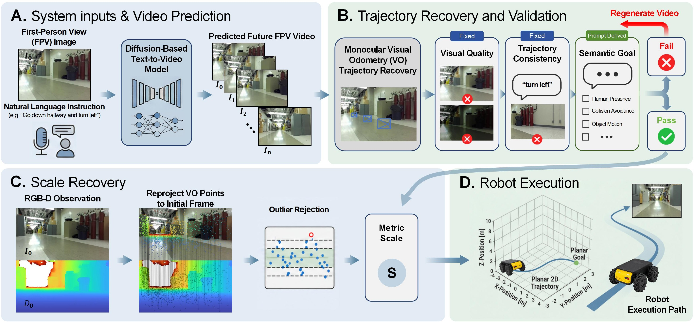
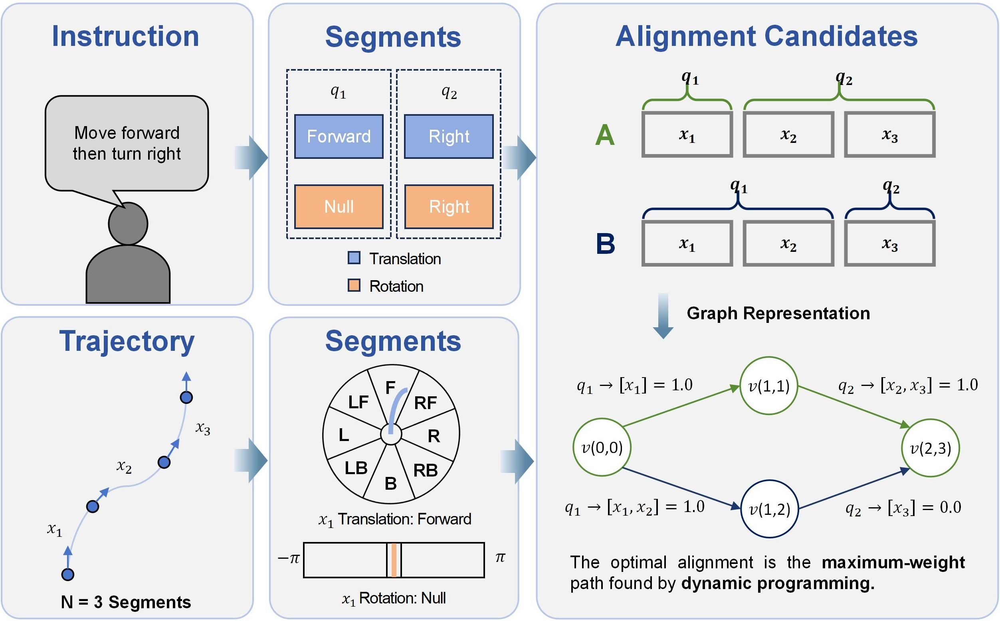
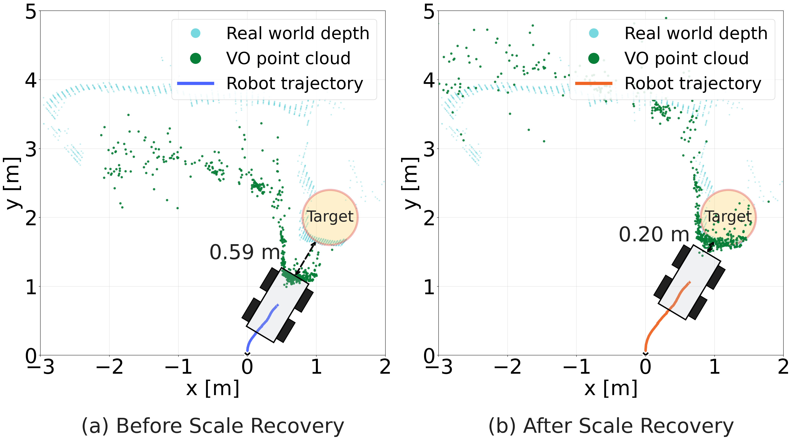
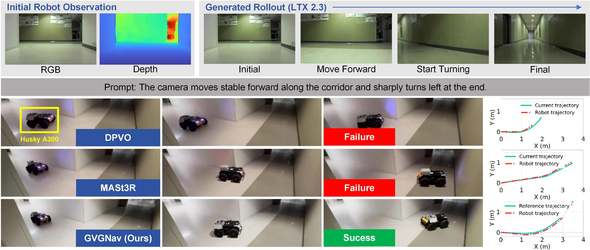
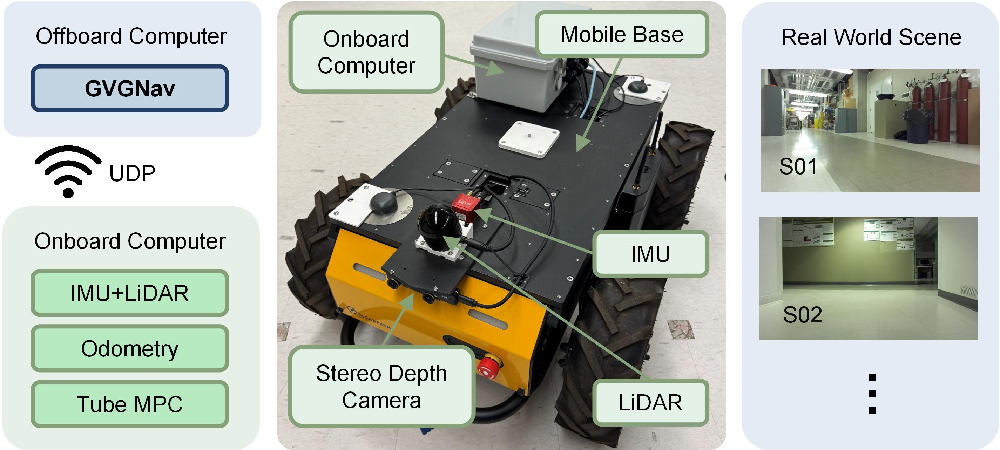

Anonymous supplementary material
GVGNavGenerate, Validate, and Metric-Grounding
Video Rollouts for Zero-Shot Robot Navigation
From imagined visual futures to executable robot motion.

Abstract
Language-conditioned video models can imagine how a robot should move, but a plausible video does not necessarily follow the instruction, and its reconstructed motion has no known metric scale. GVGNav addresses both challenges in a zero-shot navigation framework.
We hierarchically validate generated rollouts using visual quality, trajectory consistency, and semantic goal evidence. For an accepted rollout, sparse 3D points reconstructed by visual odometry are anchored to the initial physical depth observation, yielding a metric navigation trajectory without additional model training. On a benchmark of 288 generated rollouts, validation achieves 80.9% agreement with human judgments. In 12 physical robot trials, the recovered trajectories achieve an 83.3% execution success rate.
Imagining motion
Language-conditioned video rollouts
Example visual futures generated by LTX 2.3 from real initial camera observations. Each video below is a generated rollout, not a recording of physical robot execution. Captions summarize the corresponding generation prompts.
Checking the imagined future
Validation beyond visual plausibility
A rollout must pass all applicable checks before it can become a navigation trajectory. Visual-quality checks identify temporal artifacts. Trajectory-consistency checks compare reconstructed camera motion with the ordered motion stages in the instruction. Semantic checks assess goal-related requirements. Rejected rollouts trigger regeneration with a different random seed.

Agreement with human judgments
The benchmark contains 288 four-second rollouts spanning motion, target, and safe-navigation instructions. Combining the three checks improves accuracy over each individual check.
| Validation method | Accuracy ↑ | Precision ↑ | Recall ↑ | F1 ↑ |
|---|---|---|---|---|
| Accept all | 54.9% | 54.9% | 100.0% | 70.9% |
| Visual quality only | 69.4% | 64.8% | 96.8% | 77.7% |
| Trajectory consistency only | 69.1% | 64.9% | 94.9% | 77.1% |
| Semantic goal only | 54.9% | 54.9% | 99.4% | 70.7% |
| GVGNav · Full pipeline | 80.9% | 77.5% | 91.8% | 84.1% |
Connecting video to the physical world
Recovering metric scale from depth
Monocular visual odometry recovers motion only up to an unknown global scale. GVGNav reprojects its sparse 3D points into the initial camera frame and uses physical depth correspondences to estimate this scale robustly. The resulting trajectory is transformed into planar robot waypoints.

Physical robot evaluation
From recovered trajectories to robot motion
We evaluate a Husky A300 with a front-mounted ZED Mini in four previously unseen indoor scenarios, using three generation seeds per scenario. The accepted rollouts are shared across methods, allowing a direct comparison of trajectory recovery.

| Method | Metric scale | Final error ↓ | Success ↑ | Processing time ↓ |
|---|---|---|---|---|
| MASt3R | Yes | 0.867 m | 58.4% | 34.34 s |
| DPVO | No | 0.573 m | 41.7% | 9.52 s |
| GVGNav | Yes | 0.443 m | 83.3% | 9.82 s |
A trial succeeds when the robot reaches within 0.3 m of the target without collision in under five minutes. Scale recovery and waypoint generation add 0.30 s over unscaled DPVO; this is not the end-to-end video-generation latency. Values follow the current manuscript.
Experimental platform
An offboard computer generates and validates video rollouts and recovers the metric trajectory. Waypoints are sent to the onboard computer and tracked by a tube MPC controller. All pretrained models are used without fine-tuning.

Limitations
Spatial and avoidance constraints remain harder to verify than directional motion. Depth anchoring corrects global scale but cannot repair trajectory-shape distortion already present in the underlying reconstruction. Broader scene coverage and local geometric correction remain directions for future work.